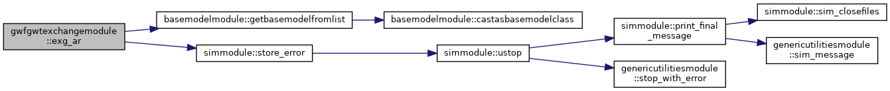
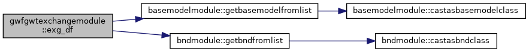
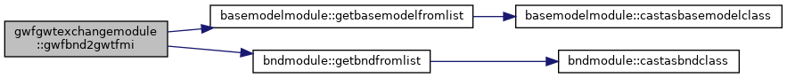
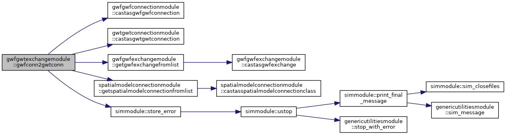
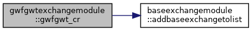
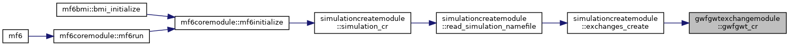
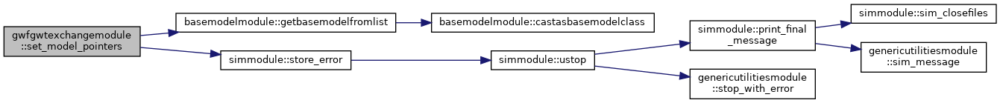

|
MODFLOW 6
version 6.4.0
MODFLOW 6 Code Documentation
|
|
MODFLOW 6
version 6.4.0
MODFLOW 6 Code Documentation
|
Data Types | |
| type | gwfgwtexchangetype |
Functions/Subroutines | |
| subroutine, public | gwfgwt_cr (filename, id, m1id, m2id) |
| subroutine | set_model_pointers (this) |
| subroutine | exg_df (this) |
| subroutine | exg_ar (this) |
| subroutine | gwfconn2gwtconn (this, gwfModel, gwtModel) |
| Link GWT connections to GWF connections or exchanges. More... | |
| subroutine | link_connections (this, gwtConn, gwfConn) |
| Links a GWT connection to its GWF counterpart. More... | |
| subroutine | exg_da (this) |
| subroutine | allocate_scalars (this) |
| subroutine | gwfbnd2gwtfmi (this) |
| subroutine gwfgwtexchangemodule::allocate_scalars | ( | class(gwfgwtexchangetype) | this | ) |
Definition at line 455 of file GwfGwtExchange.f90.
| subroutine gwfgwtexchangemodule::exg_ar | ( | class(gwfgwtexchangetype) | this | ) |
Definition at line 199 of file GwfGwtExchange.f90.

| subroutine gwfgwtexchangemodule::exg_da | ( | class(gwfgwtexchangetype) | this | ) |
Definition at line 434 of file GwfGwtExchange.f90.
| subroutine gwfgwtexchangemodule::exg_df | ( | class(gwfgwtexchangetype) | this | ) |
Definition at line 145 of file GwfGwtExchange.f90.

| subroutine gwfgwtexchangemodule::gwfbnd2gwtfmi | ( | class(gwfgwtexchangetype) | this | ) |
Definition at line 478 of file GwfGwtExchange.f90.

| subroutine gwfgwtexchangemodule::gwfconn2gwtconn | ( | class(gwfgwtexchangetype) | this, |
| type(gwfmodeltype), pointer | gwfModel, | ||
| type(gwtmodeltype), pointer | gwtModel | ||
| ) |
| this | this exchange |
| gwfmodel | the flow model |
| gwtmodel | the transport model |
Definition at line 288 of file GwfGwtExchange.f90.

| subroutine, public gwfgwtexchangemodule::gwfgwt_cr | ( | character(len=*), intent(in) | filename, |
| integer(i4b), intent(in) | id, | ||
| integer(i4b), intent(in) | m1id, | ||
| integer(i4b), intent(in) | m2id | ||
| ) |
Definition at line 46 of file GwfGwtExchange.f90.


| subroutine gwfgwtexchangemodule::link_connections | ( | class(gwfgwtexchangetype) | this, |
| class(gwtgwtconnectiontype), pointer | gwtConn, | ||
| class(gwfgwfconnectiontype), pointer | gwfConn | ||
| ) |
| this | this exchange |
| gwtconn | GWT connection |
| gwfconn | GWF connection |
Definition at line 405 of file GwfGwtExchange.f90.
| subroutine gwfgwtexchangemodule::set_model_pointers | ( | class(gwfgwtexchangetype) | this | ) |
Definition at line 88 of file GwfGwtExchange.f90.

 1.8.17
1.8.17